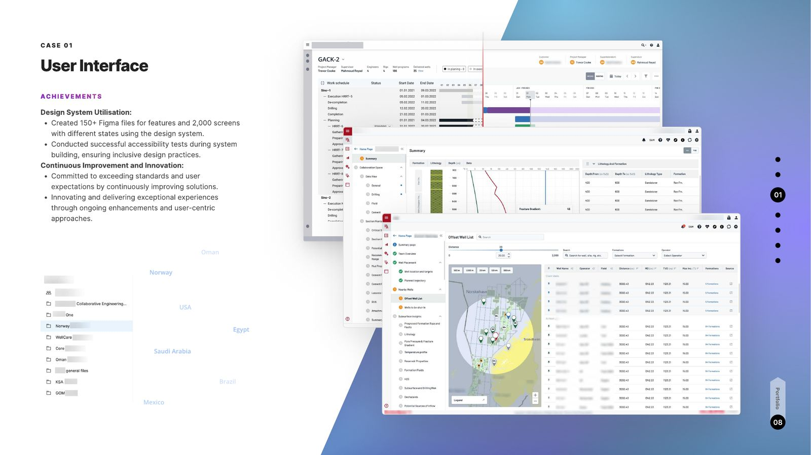

Integrated technology supporting crucial decision points across the oil-and-gas life cycle. The challenge: custom solutions for diverse data categories across Saudi Arabia, Norway, Oman, Mexico, and the USA — engineer-centric features, intricate calculations, and regional differences reconciled into one seamless experience.